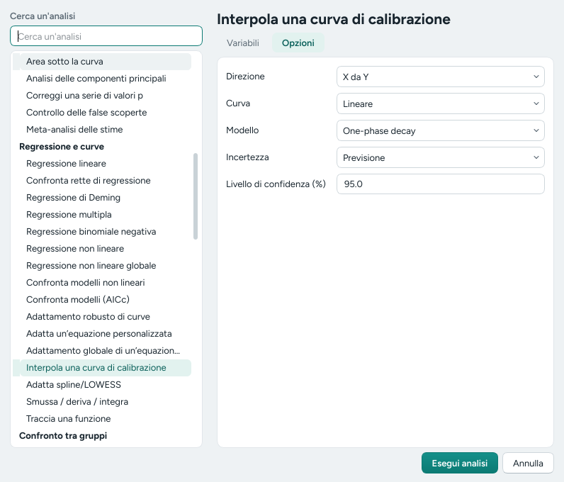
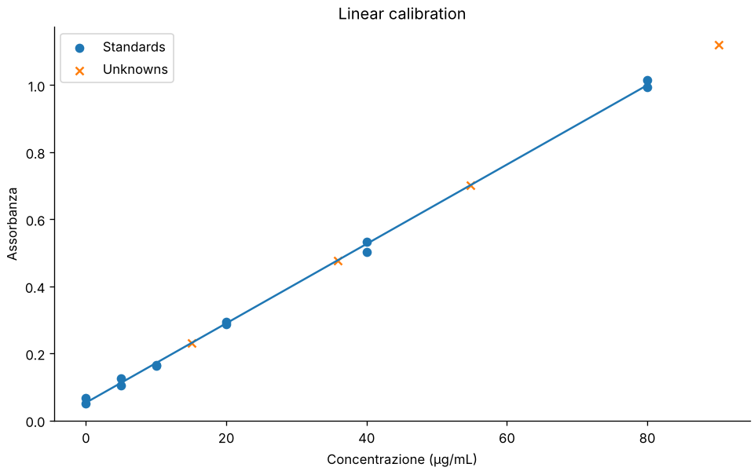
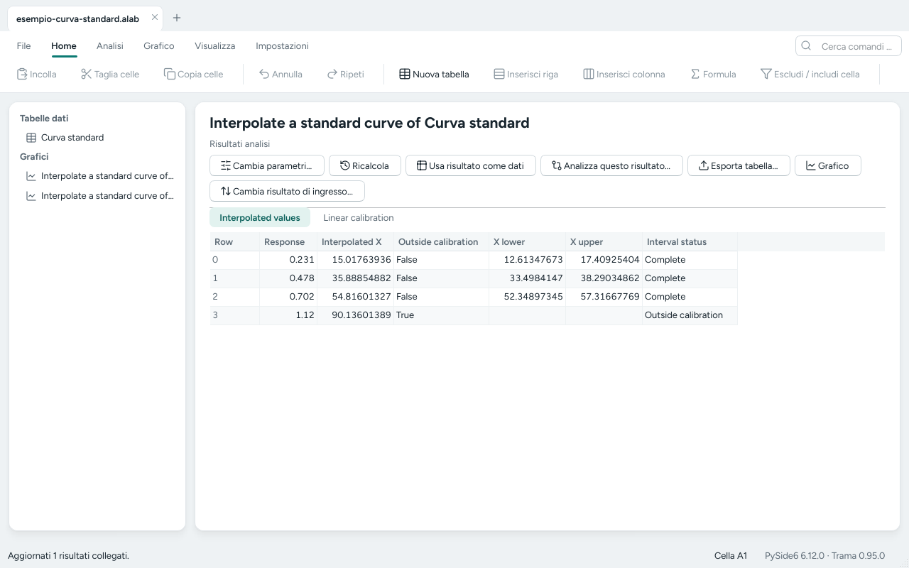
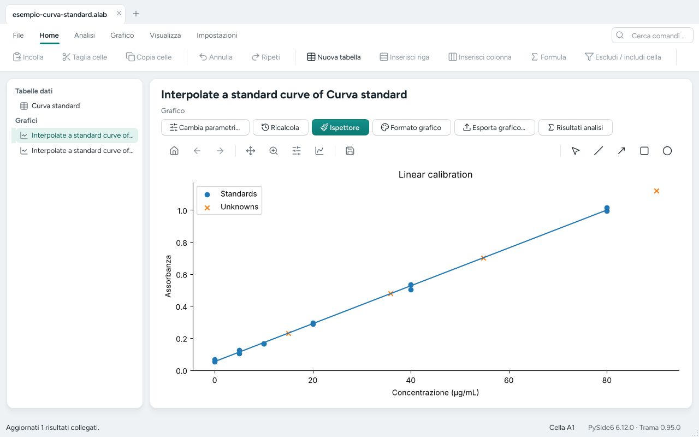

GuidaCurve e calibrazioneCurva standard
Risalire alla concentrazione dalla risposta
Hai sei standard a concentrazione nota, letti in doppio, e quattro campioni di cui conosci solo l’assorbanza. Che concentrazione hanno, con quale incertezza, e che cosa fai con un campione che esce dalla curva?
- Verificato Trama 0.95.0 beta
- Dati 12 standard e 4 ignoti sintetici
- Seme 11
- Lettura 8 minuti
Quando usarlo
Con una curva standard misuri la risposta di campioni a concentrazione nota, adatti una curva e poi la leggi al contrario: dalla risposta di un campione ignoto risali alla sua concentrazione. È l’interpolazione inversa, o calibrazione. In Trama la fa Interpola una curva di calibrazione con Direzione = X da Y.
- Il campo degli standard copre gli ignoti. La curva vale solo fra lo standard più basso e il più alto. Fuori da quel campo è un’estrapolazione: il caso limite mostra come Trama la segnala.
- La forma è giusta. Qui la risposta è lineare. Se la curva si appiattisce alle concentrazioni alte, scegli Curva = Non lineare e un modello sigmoide invece di accorciare la retta a occhio.
- Il bianco è uno standard. La concentrazione zero entra nel fit come gli altri punti e fissa l’intercetta.
- L’incertezza giusta. Un campione letto una volta porta con sé il rumore di quella lettura. Serve l’intervallo di Previsione, non quello della Risposta media: la differenza è nel risultato.
I dati
Una sola tabella con tre colonne. Concentrazione (µg/mL) e Assorbanza contengono i 12 standard: 0, 5, 10, 20, 40 e 80 µg/mL, ciascuno in doppio. Campioni ignoti (assorbanza) contiene le quattro letture da convertire; le celle sotto restano vuote.
| Concentrazione (µg/mL) | Assorbanza | Campioni ignoti (assorbanza) |
|---|---|---|
| 0 | 0,052 | 0,231 |
| 0 | 0,068 | 0,478 |
| 5 | 0,126 | 0,702 |
| 5 | 0,105 | 1,120 |
| … 8 righe in più, la terza colonna vuota | ||
In Trama
- Apri il progetto con File → Apri…, oppure porta il CSV con File → Importa nel progetto….
- Seleziona la tabella Curva standard e scegli Analisi → Analizza… (Ctrl+Maiusc+A).
- Nell’elenco delle analisi apri Regressione e curve → Interpola una curva di calibrazione. Nella scheda Variabili scegli X =
Concentrazione (µg/mL), Y =Assorbanzae Risposte incognite =Campioni ignoti (assorbanza). - Nella scheda Opzioni imposta i valori qui sotto e premi Esegui analisi.
- Per il confronto il progetto allegato contiene la stessa interpolazione con Incertezza = Risposta media.
| Direzione | X da Y |
|---|---|
| Curva | Lineare |
| Incertezza | Previsione |
| Livello di confidenza (%) | 95 |
Il campo Modello conta solo con la curva non lineare.
Mostra la schermata della scheda Opzioni

Leggi il risultato
La scheda Linear calibration riporta la retta: pendenza 0,011835 unità di assorbanza per µg/mL (errore standard 0,000128), intercetta 0,0533, R² = 0,9988. La scheda Interpolated values riporta una riga per campione ignoto. Nella 0.95.0 i nomi delle schede e delle colonne restano in inglese anche con l’interfaccia italiana.


| Assorbanza | Concentrazione | Intervallo di predizione 95% | Intervallo della risposta media 95% |
|---|---|---|---|
| 0,231 | 15,02 | 12,61 – 17,41 | 14,30 – 15,72 |
| 0,478 | 35,89 | 33,50 – 38,29 | 35,19 – 36,60 |
| 0,702 | 54,82 | 52,35 – 57,32 | 53,87 – 55,79 |
| 1,120 | fuori campo | — | — |
I due intervalli rispondono a domande diverse. Quello della risposta media dice quanto è incerta la retta: è stretto, circa ±0,7 µg/mL, perché 12 standard la fissano bene. Quello di predizione aggiunge il rumore di una singola nuova lettura, cioè proprio quello che succede quando leggi un campione ignoto una volta: circa ±2,4 µg/mL. Per un campione letto una volta riporta l’intervallo di predizione. Usare quello della media fa sembrare la misura tre volte più precisa di quanto sia.
Mostra la schermata della scheda Interpolated values

Un campione oltre lo standard più alto
Il quarto campione ha assorbanza 1,120. Lo standard più alto, 80 µg/mL, è stato letto 1,015 e 0,995. Prolungando la retta Trama calcola 90,1 µg/mL, ma nella stessa riga mette Outside calibration = True, lascia vuoti i limiti e scrive Interval status = Outside calibration. Nel grafico la croce sta a destra dell’ultimo standard, dove la retta non arriva.
Quel 90,1 non è una misura: nessuno standard dice se a 90 µg/mL la risposta è ancora lineare. Che cosa fare: diluisci il campione in modo che cada dentro la curva e rileggilo, moltiplicando poi per il fattore di diluizione; se non puoi, riportalo come «> 80 µg/mL». Non riportare 90,1.
Mostra il grafico nell’app

Come accorgersene. La colonna Outside calibration vale True: Trama la accende quando la concentrazione stimata cade fuori dal campo degli standard, qui da 0 a 80 µg/mL. Nel grafico il punto sta oltre l’ultimo standard o prima del bianco.
Cosa riportare
- Concentrazioni e repliche degli standard, bianco compreso, e il campo di validità della curva.
- Modello (lineare o quale non lineare), pendenza, intercetta e R².
- Per ogni campione la concentrazione con l’intervallo di predizione, e quali campioni erano fuori campo e come sono stati trattati.
- Versione di Trama e progetto
.alabche ripete il calcolo.
Le concentrazioni sono state ricavate per interpolazione inversa da una retta di calibrazione su sei standard in doppio (0–80 µg/mL; pendenza 0,01183 unità di assorbanza per µg/mL, R² = 0,999) in Trama 0.95.0 beta, con intervalli di predizione al 95%. Un campione con assorbanza superiore allo standard più alto è stato riportato come > 80 µg/mL.
Fonti
- Osborne C. (1991). Statistical calibration: a review. International Statistical Review, 59(3), 309–336. doi:10.2307/1403690
- Draper N. R., Smith H. (1998). Applied Regression Analysis, 3ª ed. Wiley. doi:10.1002/9781118625590
- ICH (2022). M10: Bioanalytical method validation and study sample analysis. Linea guida scientifica, Agenzia europea per i medicinali. ema.europa.eu
Verificato con Trama 0.95.0 beta (tag v0.95.0, commit 4c07db6) il 20 novembre 2026. Calcolo in analisi/exploration.py, grafico e intervalli in analisi/additional.py.